Lab2
Before Lab
Lab2的主要内容:
Physical Page Management,Virtual Memroy,Kernel Address Space;代码实现JOS中的内存分页管理功能，有页面管理和页表管理两部分。和理论相比，代码实现需要考虑的细节真是太多。实验最终的目的是通过几个检测函数:
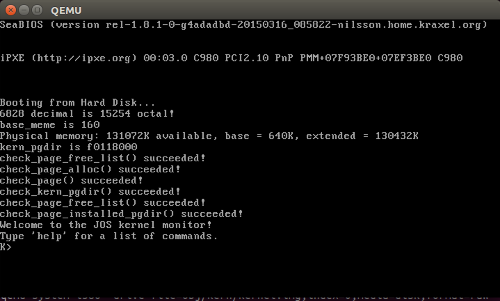
Lab1完成时整个JOS内存布局如下图:
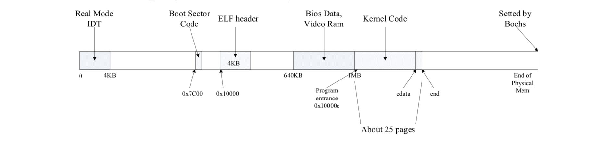
memlayout.h和pmap.h
掌握这两个文件中的函数是完成Lab2必不可少的条件，在此进行总结。
#### pmap.h Lab2中需要重点关注的对象有三个:物理内存，虚拟内存，空闲链表struct PageInfo。该头文件中的函数实现了三者之间的相互转化。
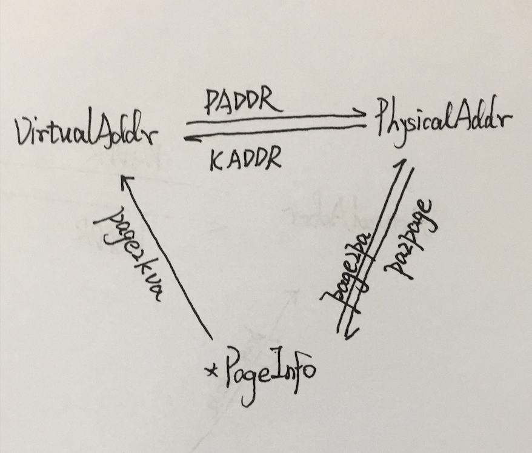
另外还有几个外部变量也需要重点关注一下: *
bootstack内核栈 *pages所有物理内存按照4KB划分的对应映射数组 *npage数组元素个数 *kern_pgdir页目录 注意pages不是空闲链表，仅仅只是一个数组而已。而pages数组索引就是所有页式物理内存的索引。所以struct PageInfo *pp和物理内存关系很紧密：**(pp-pages)*4KB就是该数组元素对应的物理页面page的物理地址**，这也是page2pa函数的原型。
memlayout.h
介绍了JOS虚拟内存的详细布局，定义了所有需要使用的宏。在Lab2中，我们需要完成的是内核部分虚拟地址到物理的映射。所以重点关注的是UTOP之上的布局.当然需要注意的细节就很多了，比如大小，权限，每一部分内存的作用等。
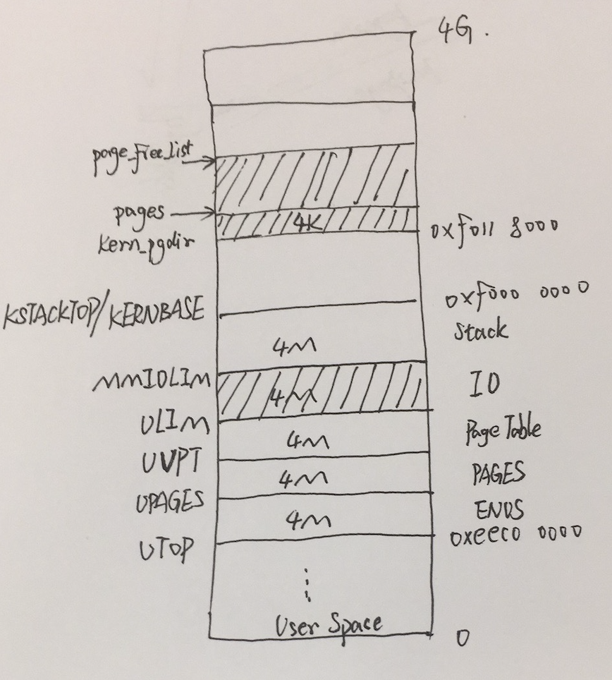
上图只是一个简化图，结合源码看会好很多，比如一些和大小有关的宏定义:
1 | #define PGSIZE 4096 // bytes mapped by a page |
其中阴影部分指的是
page_init()函数之前已经初始化好的。这是因为在page_init()函数之前分页机制还没有建立好，所以只能用字节分配的方法分配物理内存。这些阴影部分的物理内存都是boot_alloc(uing32_t n)函数分配的；而page_init()函数之后，所有的物理内存分配都是以页Page为单位，所以字节分配函数boot_alloc()也被禁用了。
总结
我觉得整个Lab2就是在实现两种映射：物理内存到空闲链表的映射和虚拟内存到物理内存的映射。而上述的两个头文件基本讲清楚了映射需要实现的步骤和原理，应该反复阅读。初此之外还应该对C语言的强转，指针，位运算有一个很深的了解，最好先看一下TCPL。
Physical Page Management
理论课很大的一部分缺失就是没有对物理内存布局进行讲解。而没有物理内存的基础，映射（Mapping）根本无从谈起。页面管理分析如下:
从代码角度看，Lab2接上Lab1中kern/entry.S跳转到kern/init.c中的i386_init()开始执行。可以发现mem_init()函数，整个Lab2就是完善这个内存函数的过程。而第一部分物理内存就是完成将物理内存映射到空闲链表上。
PartOne需要完成物理内存的管理，并实现物理内存的布局。这里的布局指的是对空闲链表的管理。所以我们首先要创建空闲链表，然后用空闲链表对这一整块物理内存进行管理，当然管理的单位是Page（4K）。
基本上需要实现的代码都在pmap.c中。我们用Taglist统筹一下该文件中所有的函数和宏定义:
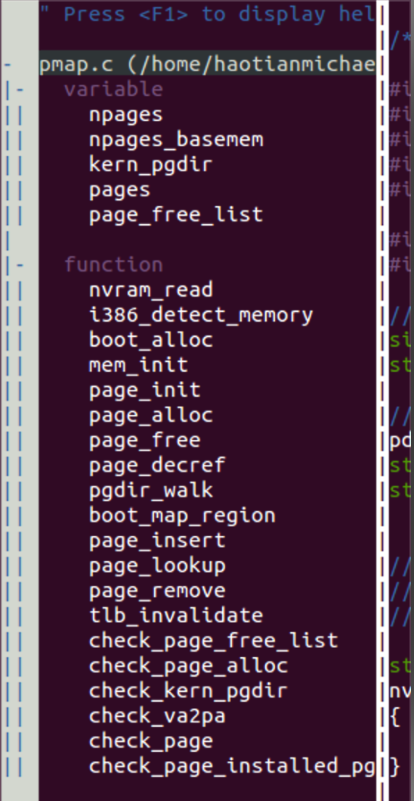
boot_alloc
彼时
mem_init()函数中还只有一个函数————i386_detect_memory()。用来检测物理内存的硬件状态及其参数，其中有几个比较重要的变量:
2
3
4
npages_basemem: 160
kern_pgdir: 未分配
basemem: 640KB
其中
basemem=640K是因为在inc/memlayout.h中定义过一个宏:#define IOPHYSMEM 0xA0000。在Lab1的内存布局中有详细的分布，在这个宏定义的地址往上是 实模式下IDT和第一部分bootsector。所以将宏定义以下到0x00000000的内存称为base_mem。而这部分需要被映射到空闲链表中，所以按照页式单位可以映射640K/4K=160个pages。
接下来就是实现代码。因为代码太多不打算贴出来，主要是做Lab的思路并分享一些完善内存布局过程中画的草稿。
从mem_init()的进度来看，首先需要实现boot_alloc()函数，然后用该函数直接分配物理内存给kern_pgdir和pages两个数据结构。而boot_alloc中值得一提就是extern char end[]和对齐函数ROUNDUP(a, n)。在Lab1完成之后，我们将内核放到0x10000000这个位置直到end结束，所以end是链接器做链接时内核加载结束的地址。而ROUNDUP(a, n)的功能是向上对齐。因为我们的操作都是4KB对齐的，所以需要在end后面进行对齐操作。详细见Lab1的内存布局。最后函数返回的是已分配内存的虚拟首地址。
指导书中推荐使用断言assert进行调试的方法。不过我一般使用输出调试cprintf+return。当分配好kern_pgdir和pages之后，我们使用输出调试看一下这两个数据结构的虚拟地址:
2
3
4
5
6
7
cprintf("before allocating nextfree is %x\n", nextfree);
/*
address allocator
*/
cprintf("after allocating nextfree is %x\n", nextfree);
}
看一下输出结果:
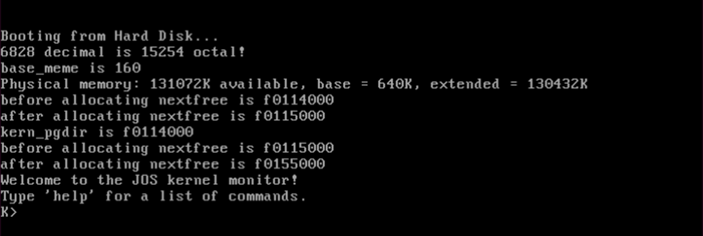
然后就是实现
page_init()函数。此时我们已经建立了一个和全部物理内存相对应的数组pages。这为接下来空闲链表的实现奠定了基础:page_init()函数就是按照Hints中提示的物理内存的基本布局，找到那些空闲的物理内存并将其对应的pages数组元素链接起来形成一个链表。可能不好理解，直接上图:
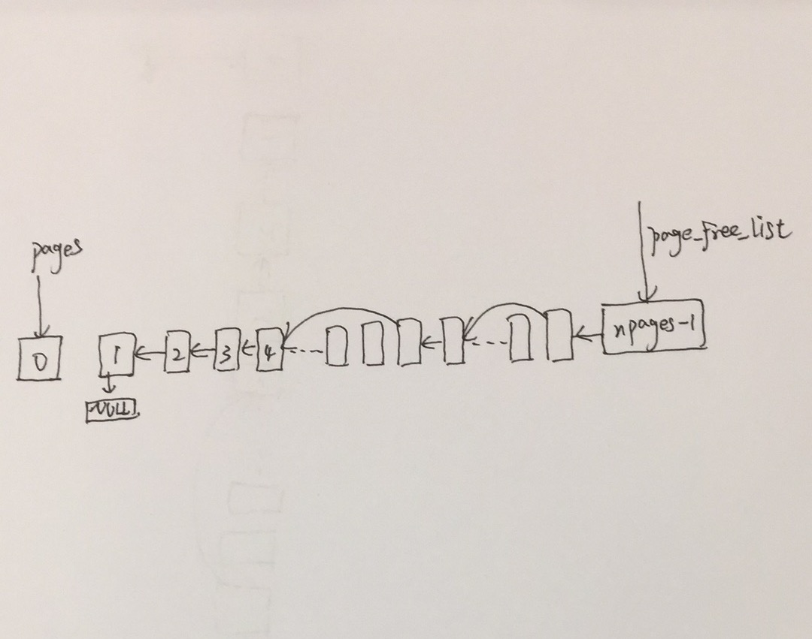
这个功能是由下面简单的几句C语言实现的：
2
3
4
5
6
7
for (i = 1; i < npages_basemem; i++) {
pages[i].pp_ref = 0;
pages[i].pp_link = page_free_list;
page_free_list = &pages[i];
}
page_init函数实现了空闲链表。至此内存的布局已经很清楚了：
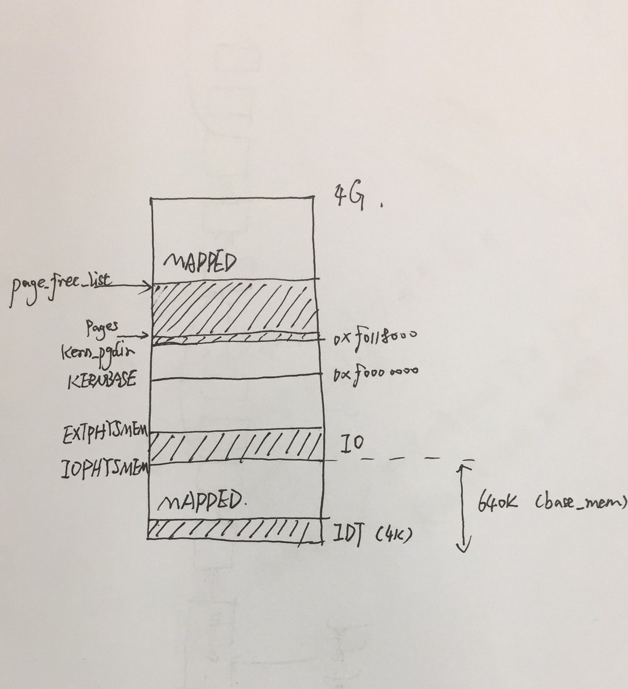
page_alloc
page_alloc函数实现物理内存的页式分配————分配一页空闲的物理内存。根据上面的思路:pages数组就是全部物理内存的映射，而page_free_list是空闲物理内存的映射所以是部分pages元素链成的。所以我们实际上可以通过page_free_list指针来确定具体的物理地址:**(page_free_list-pages)*4K**。
实现很简单，当中需要注意的细节初始化函数memset(void *v, int c, size_t n)中需要的地址是虚拟地址。这里先参考一下kern_pgdir的实现和初始化。
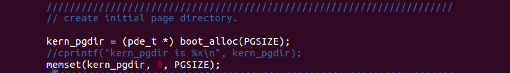
所以在实现中需要将page_free_list指向的pages元素映射到具体的物理地址
page2pa, 然后将物理地址转化为虚拟地址PADDR并返回。
细节
至此物理映射到空闲链表的过程已经实现。
boot_alloc和page_alloc最终返回的都是虚拟地址。还有一些宏定义和函数比如PGNUM(la)，memset(void *v, int c, size_t n)的参数也是虚拟地址。在Lab2中一个核心问题就是区分物理地址还是虚拟地址。
因为mmu的缘故，访问内存的时候会进行一次线性地址到物理地址的转换。所不能直接使用物理地址。我们索性所有自定义用到地址的地方都使用虚拟地址，如果需要物理地址再使用PADDR(la)转化。
Virtual Memory
Question
首先区分逻辑地址，线性地址和物理地址的概念。Lab2屏蔽了逻辑地址到线性地址的转化，也就是GDT段式存储管理。直接从线性地址开始。
指导书中重点讲解了虚拟内存，物理内存和指针这几个概念。觉得有一些意思，就把翻译贴上了:
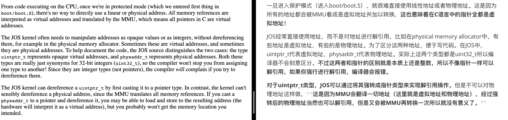
另外，在之后的Lab中会遇到很多一个物理页面同时被映射到好几块虚拟内存中的情况。JOS使用
struct PageInfo->pp_ref来管理页目录对页表页的引用的数量。见下面代码:
2
3
4
char* value = return_a_pointer();
*value = 10;
x = (mystery_t) value;
根据上面的分析，指针
value是虚拟地址。而对value进行强转并赋值的只能是虚拟地址了。
pgdir_walk
在实现下面的代码之前，默认熟悉
inc/mmu.h中的所有内容。
该函数的作用很关键。给定一个虚拟地址，pgdir_walk函数返回一个指向该地址对应页表项的指针。而这个函数主要是为完成一部分虚拟地址到一部分物理地址的映射函数boot_map_region做准备的。所以只需要定位到页表项就可以，而不需要加上后12位偏移量。JOS的页目录（表）项PDE&PTE的格式见下:
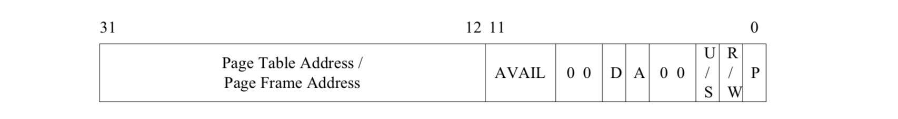
该函数的分析如下:
2
3
4
5
6
7
8
9
10
11
12
13
14
15
16
17
18
19
pgdir_walk(pde_t *pgdir, const void *va, int create)
{
uintptr_t ptIndex = PTX(va); //PTX取出页表项的偏移量
struct PageInfo * newAlloc; //空闲链表指针
if(!(pgdir[PDX(va)] & PTE_P)) { //&位运算是取出PTE_P这一位，看页表是否存在
if(create) {
if((newAlloc = page_alloc(1)) == NULL)
return NULL;
newAlloc->pp_ref++;
// |位运算是合并位； 【20】+【12】分别为页目录项（注意不是页表项）20位的地址，后12位的标志位
pgdir[PDX(va)] = page2pa(newAlloc) | PTE_P | PTE_U | PTE_W;
}else {
return NULL;
}
}
pte_t * pdPtr = KADDR(PTE_ADDR(pgdir[PDX(va)])); //取出页目录项的前20位
return pdPtr + ptIndex; //具体的指向具体页表项的指针
}
其中对页表项进行重新映射是关键的操作，便于理解还可以先取出前20位地址然后再加上标志位:
2
3
4
5
6
7
8
9
10
11
12
13
if(create) {
if((newAlloc = page_alloc(1)) == NULL)
return NULL;
newAlloc->pp_ref++;
pgdir[PDX(va)] = page2pa(newAlloc);
test = KADDR(pgdir[PDX(va)]); //先取出20位
pgdir[PDX(va)] = page2pa(newAlloc) | PTE_P | PTE_U | PTE_W;
return test + ptIndex;//直接返回
}else {
return NULL;
}
...
分页机制原理见下图，而
pgdir_walk函数完成的是前两部分的，最后的offset并不在其中:
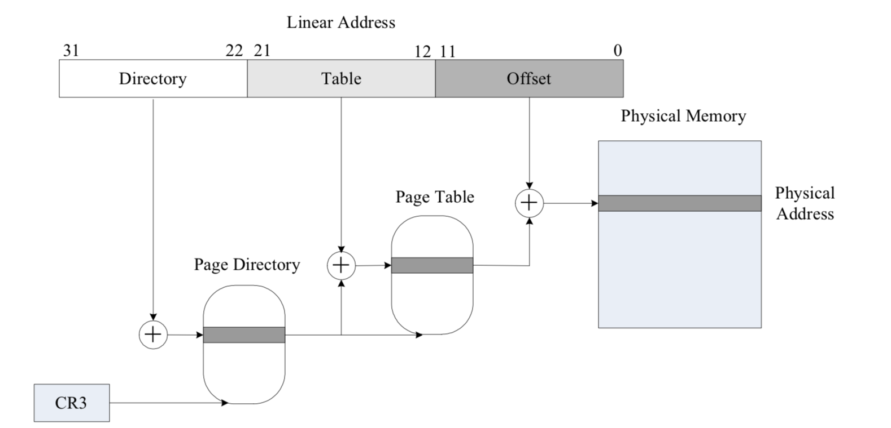
boot_map_region
接上
pgdir_walk函数返回虚拟地址相对应的页表项指针。注意该函数的参数中有一项是权限perm是和PTE_P一起的，一旦映射就存在了。因为是页表项所以是4KB对齐的（因为屏蔽掉后12位）。我们使用页表项完成虚地址到物理地址的映射:
2
3
4
5
6
7
8
9
10
11
boot_map_region(pde_t *pgdir, uintptr_t va, size_t size, physaddr_t pa, int perm)
{
int i;
for(i=0; i<size/PGSIZE; i++, va+=PGSIZE, pa+=PGSIZE) { //4K 对齐
pte_t *pte = pgdir_walk(pgdir,(void*)va, 1);
if(pte == NULL) panic("boot_map_region panic : out of memory!\n");
*pte = pa | perm | PTE_P; //完成映射，并设置标志位来确定页表权限
}
}
后面几个函数实现都很简单，不再赘述。
至此，我们实现了内存页式管理的页表管理部分。
Kernel Address Space
Mapping
关于学习JOS对虚拟内存空间的整体布局。JOS是32位的操作系统，一共有4G的虚拟空间。以
ULIM为分界线，界限以下为用户空间，以上为内核空间。其中从ULIM到KERNBASE部分作为内核的系统栈共4M空间。对于内存详细的布局可以从inc/memlayout.h中看到，这里的重点是因为内核和用户空间同时被映射到物理内存中，所以需要一种方式来避免两者之间相互读写。而且JOS和其他现代操作系统不同的是，整个OS只有一个页目录kern_pgdir（应该是每一个进程有一套完整的页表系统）。
方法是权限位:
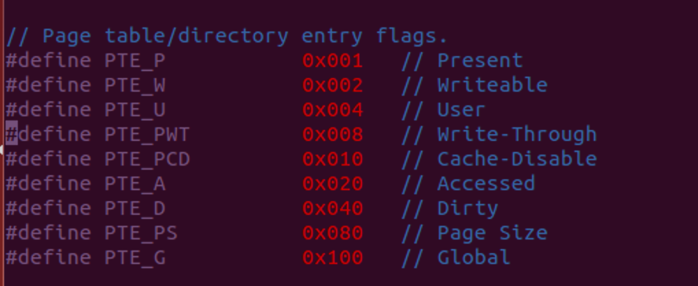
当一个程序试图访问一个虚拟地址的数据的时候，x86系统的保护机制运行为: * 先检查短权限位DPL，不过和页式分配无关 * 再检查页目录相应表项的访问权限，如果不过也产生异常 * 最后检查二级页表相应页表的访问权限，不够就产生异常 x86对权限的原则是不在页目录这一环节限制太多，让最终的访问控制在二级页表这一环节上在设置。实际上Intel手册上给出了一个页目录加页表的访问控制的组合控制效果:
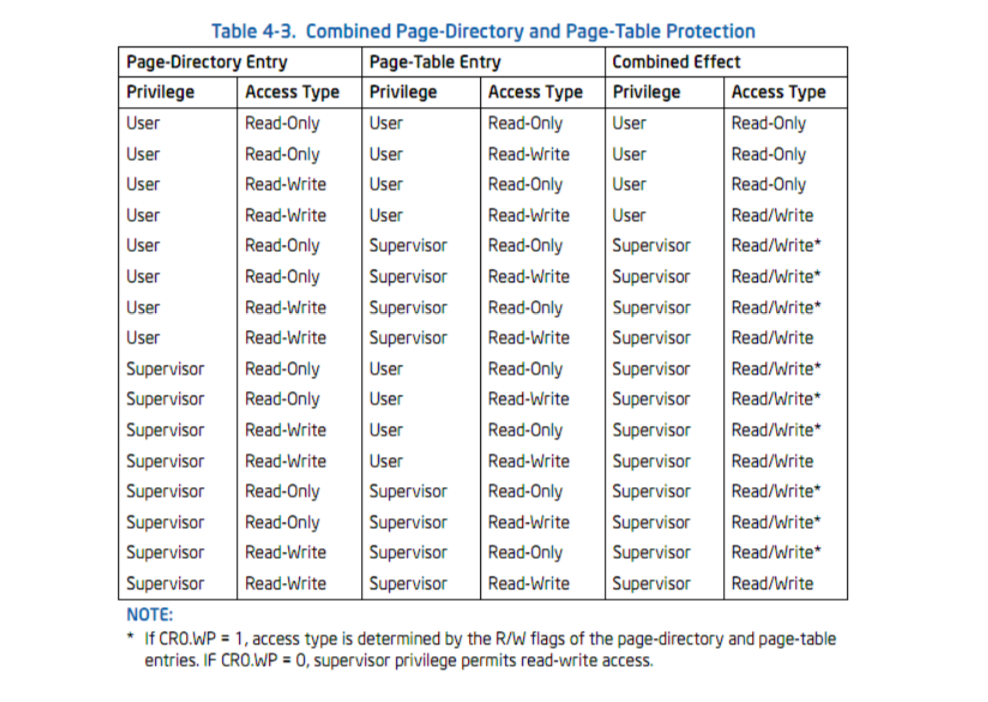
实现
mem_init函数的最后一部分内容，实现JOS的虚拟映射:
首先我们将虚拟地址中[UPAGES, sizeof(pages)]部分映射到物理地址[pages, sizeof(pages)]上。
然后我们将虚拟地址中[KSTACKTOP-KSTKSIZE, KSTACKTOP]部分映射到[bootstack, KSTKSIZE]上。
最后将KERNBASE以上的虚拟地址映射到所有物理地址上。 这里注意一下一个细节:
2
3
4
5
6
...
// Permissions: kernel R, user R
kern_pgdir[PDX(UVPT)] = PADDR(kern_pgdir) | PTE_U | PTE_P;
...
}
这是在
mem_init函数申请kern_pgdir之后就发生的映射，而这句代码本质上就是映射函数boot_map_region。目的很简单————完成kern_pgdir自身到UVPT的映射。我们不难明白，整个JOS只有一个页目录。Lab基本结束，这时候的JOS内存整体布局如下:
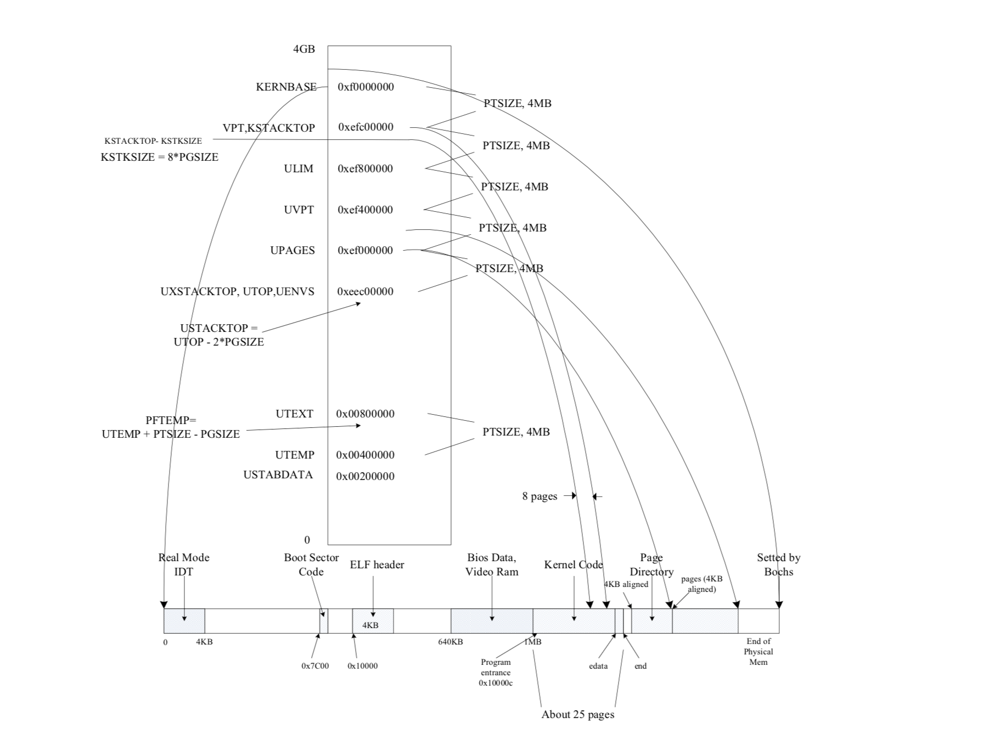
Question
第一个问题上面刚回答过了，就是映射的细节问题。
在映射的时候设置了PTE_U的用户才有读写权限。
我们的UPAGES有4MB的空间，一个struct PageInfo大小8B。所以能管理的物理块为**4MB/8*4KB = 2GB。
管理内存的开销一共有物理映射pages,页目录,页表。如果第三个问题成立也就是说物理内存最大一共有2G的话，那pages大小一共有2G/4K8=4M。而页目录kern_pgdir一共有4KB大小；相应的页表是4MB。一共有8MB+4KB。 ##### entry.S 这部分是在Lab1的时候遗留下来的问题，因为在系统刚启动的时候初始化过一个页目录entry_pgdir。关于细节可以参看kern/entrypgdir.c和kern/entry.S。这里介绍一些QEMU的新用法来进行调试（其实也在Lab2中是要求掌握的）:xp/Nx paddr输出从paddr物理地址开始的N个字节的值 *info register输出当前寄存器的状态 *info mem输出当前完成映射的虚拟地址和对应权限 *info pg输出当前页表，页目录和页表项是分开的 其实我们从Lab1的时候已经调试过，movl %eax,%cr0执行结束的时候打开分页机制**。但是这次可以直接看到分页的结果和映射的结果还是很爽的，结合kern/entrypgdir.c来看一下便很容易回答最后一个问题:
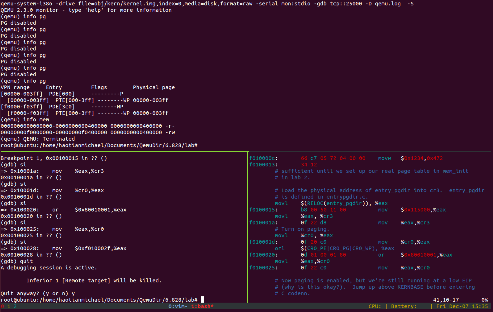
1 | // The entry.S page directory maps the first 4MB of physical memory |
不难发现其实在
entry_pgdir中已经完成了0x00000000-0x00400000到0xf0000000-0xf0400000和到0x00000000-0x00400000的映射。而实现映射的方式也是直接讲地址写到页表项entry_pgdir中。
通过调试，发现两次页目录的创建过程中，映射的地址都不一样:
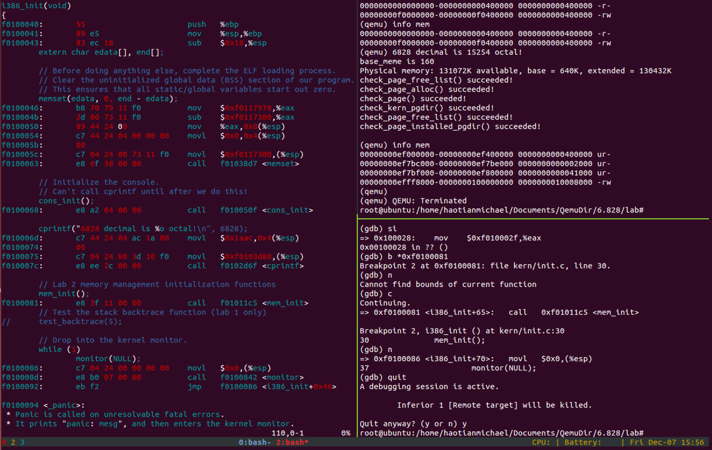
至此Lab2完成，Challenge时间关系不做了。这是源代码.
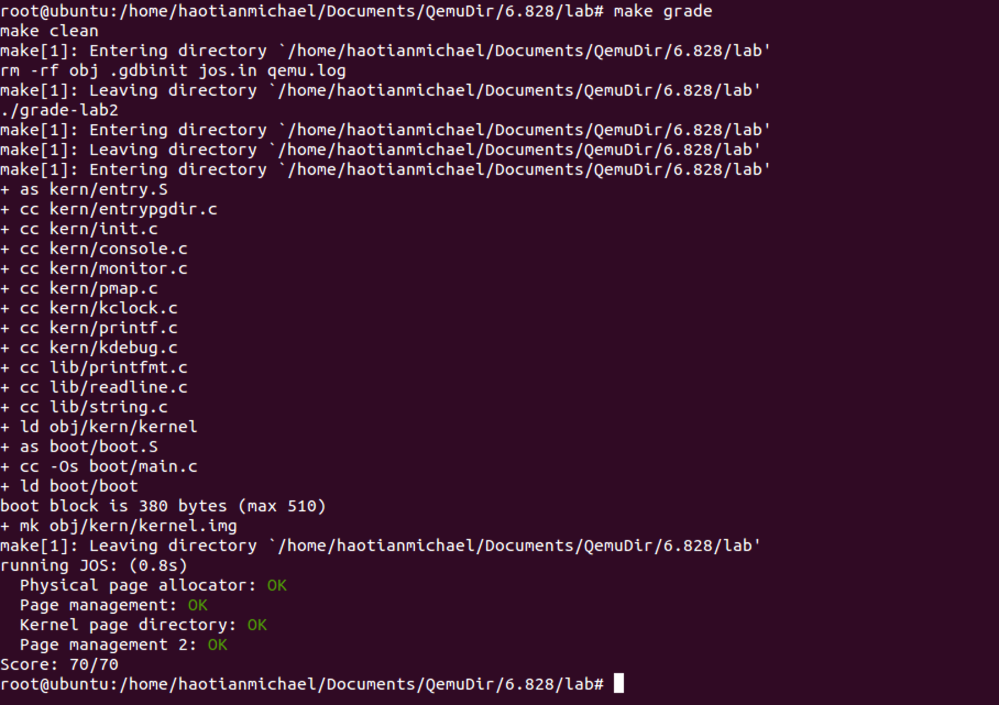